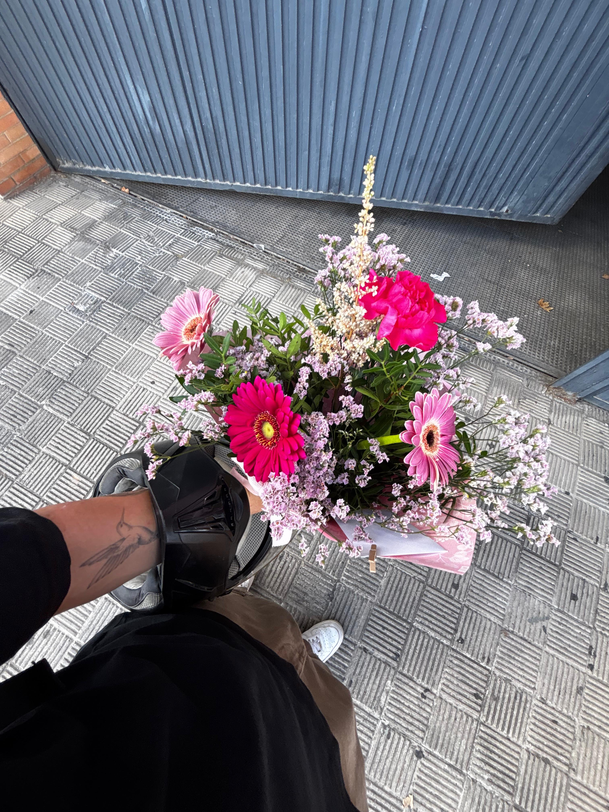
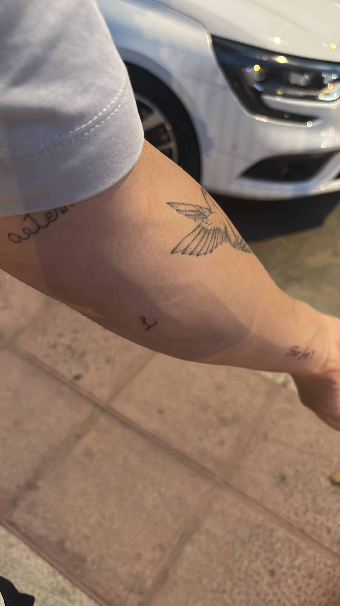
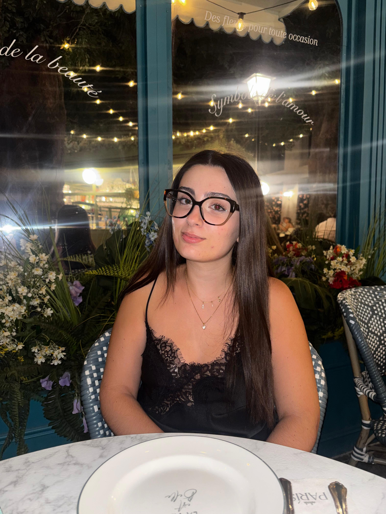

Nuestros Momentos

Esta si que fue nuestra primera foto juntos en un dia un poquito peculiar.
.jpeg)
nuestra primera foto cuando empezamos a fijarnos el uno en el otro
.jpeg)
de distraccion, sabiendo lo que nos esperaba dentro de poco
.jpeg)
la primera vez que salimos solos juntos a ver a clarck (la noche que de me declaro mojigato)
.jpeg)
cuando todo ya daba igual y solo sabia que queria estar toda mi vida a tu lado a pesar de a quien le pique

nuestra primera foto juntos bien pillos

sin saber que dentro de poco se me iba a quitar el ak de miedica y nos atrevimos a ndar un paso

con nervios que nada pero viendote feliz y apunto de pedirte lo que tanto tiempo llevaba queriendo

hartos de andar pero dando nuestros primeros pasos juntos de parejita confirmada con espectadores pendientes

llegando tarde pero viendo el mundial con aigos pero con lo mas importante, con mi persona favorita

la ultima foto, donde mientras cenabamos vi lo agradecido que estaba con la vida por hacer que estemos juntos, te amo.

auque no es de los dos juntos pero me parece un buen recuerdo, cuando no crei verte mas pero si, pasó

mi japonesa, la que mas ganas tengo que vuelva para llenarte a besos y espero que te lo estes disfrutando al maximo, te amo. perdon por las peleillas que hemos podido tener, no queria que pasara.

aqui preparando la sopresita de cumpelaños de miamor recien llegada de japonn

porque algo que tanto me ha marcado lo llevare en mi piel por toda mi vida

nuestra ultima salida juntos que te intrigaba taaantoo el sitio doña mapas